La salud de tu mascota, en la palma de tu mano.
¡Hola! RedPet es la aplicación diseñada para que tengas acceso total y control sobre la información de salud de tus mascotas. Conecta con tu clínica veterinaria, consulta el historial médico en cualquier momento y nunca olvides una cita importante. RedPet es el complemento perfecto de RedVet, la plataforma que usa tu veterinario.
Descubre todo lo que RedPet hace por ti y tus mascotas:
Historial Médico Digital (24/7):
Accede al instante a todas las consultas, vacunas, desparasitaciones y estudios de tu mascota, estés donde estés.
Información Detallada:
Visualiza los detalles de cada visita, incluyendo diagnósticos, tratamientos, fechas, y el veterinario que la atendió.
Autorización Segura:
Comparte el historial de tu mascota con cualquier clínica de la red RedVet de forma fácil y segura escaneando un código QR.
Comunicación Fluida:
Facilita el trabajo del veterinario, permitiéndole tener toda la información necesaria para un diagnóstico preciso desde la primera visita.
Recordatorios Automáticos:
Recibe notificaciones para próximas vacunas, desparasitaciones o revisiones agendadas por tu veterinario.
Gestión Financiera:
Consulta todos los tickets de gastos veterinarios, revisa tus saldos pendientes y pagos realizados en la sección de "Mis Finanzas".
Empezar a usar RedPet es muy fácil. Sigue estos pasos para configurar tu cuenta.
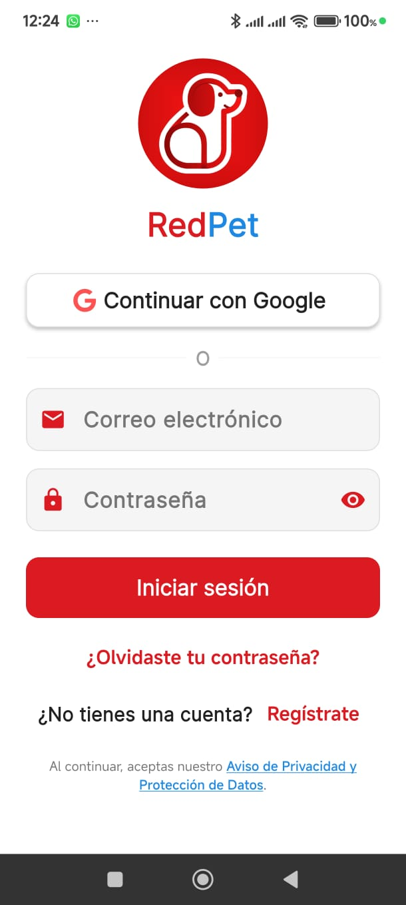
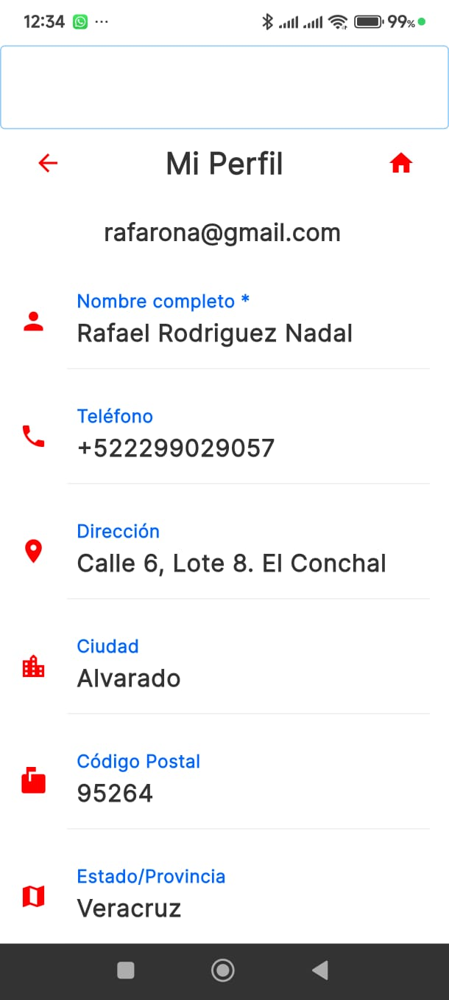
Ve al Menú Lateral → Mi Perfil para completar tu información personal. Mantener tus datos actualizados es importante para que la clínica pueda contactarte.
El centro de la aplicación es la información de tus mascotas.
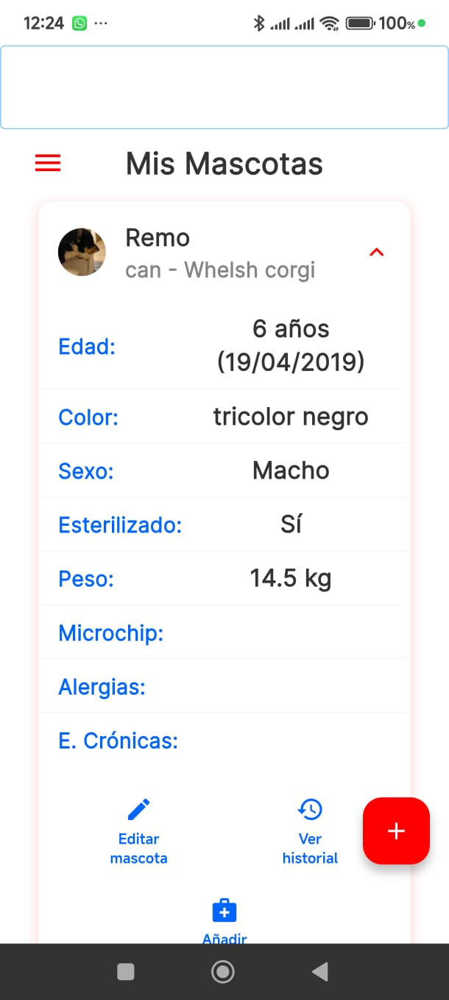
Esta es la primera pantalla que verás al entrar. Desde aquí puedes:
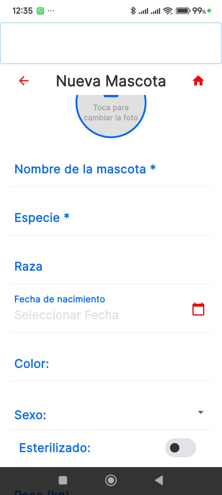
Al añadir una mascota, completa su información básica como nombre, especie, raza, fecha de nacimiento y una foto. ¡Mientras más completa esté la ficha, mejor!
Accede a toda la información que tu veterinario ha registrado sobre la salud de tu mascota.
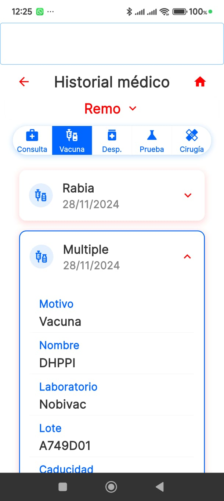
Desde la ficha de tu mascota, pulsa en Ver historial. Verás una línea de tiempo con todos los registros. Usa las pestañas (Consulta, Vacuna, Desp., etc.) para filtrar por tipo de evento y pulsa en cada uno para ver los detalles completos.
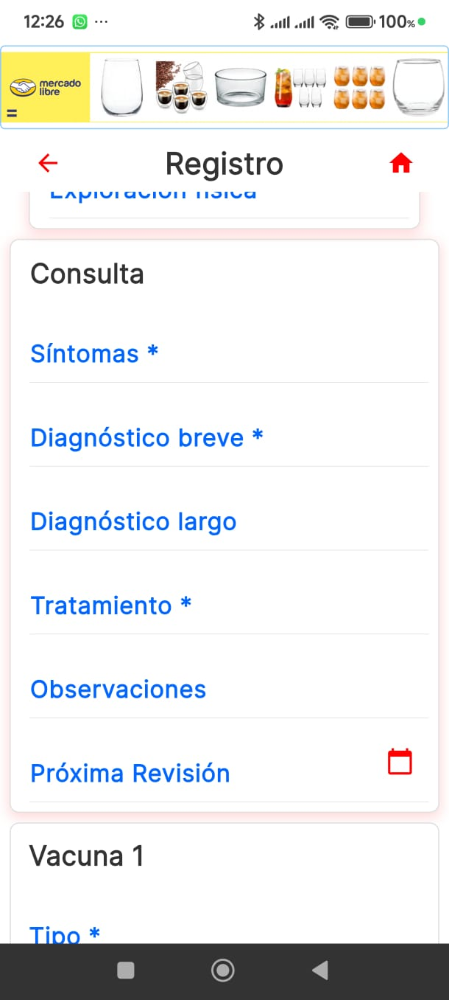
Podrás ver información detallada de:
RedPet te ayuda a mantenerte organizado.
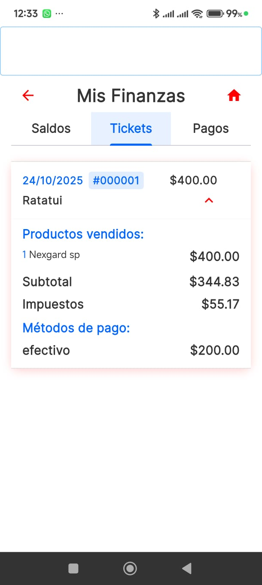
En Menú Lateral → Finanzas, puedes llevar un control de los gastos veterinarios. Revisa el detalle de cada ticket, los pagos que has realizado y si tienes algún saldo pendiente con la clínica.
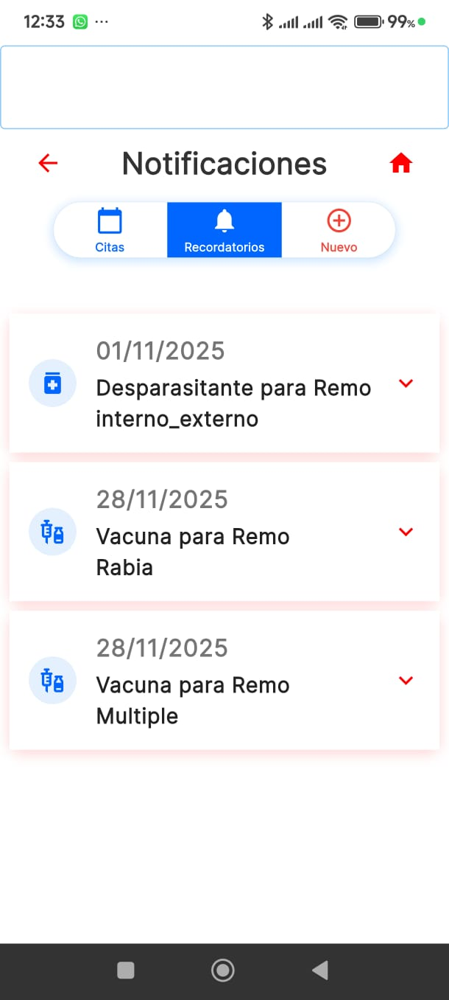
En Menú Lateral → Recordatorios, encontrarás una lista de las próximas citas, vacunas o desparasitaciones que tu veterinario haya agendado, para que no se te pase ninguna fecha importante.
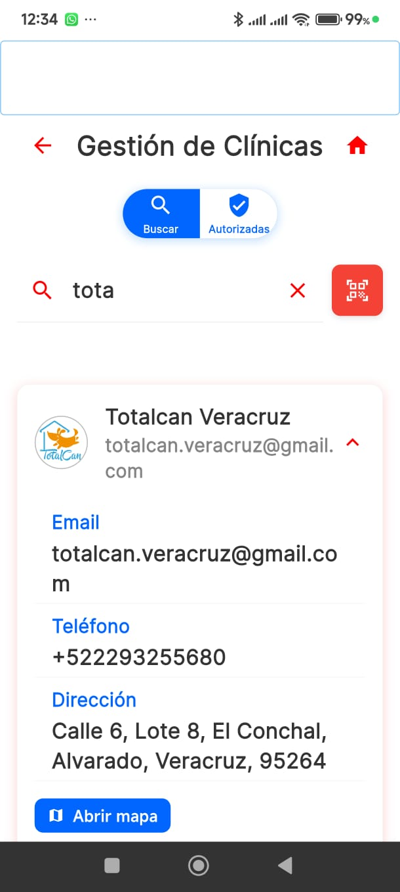
En Menú Lateral → Clínicas, puedes buscar clínicas veterinarias dentro de la red RedVet y autorizarlas para que puedan ver el historial medico de tus mascotas y asi, aunque sea la primera vez que vas a ese veterinario, tendra acceso a todo el historial para dar un diagnostico mas certero.
Configura la aplicación y gestiona tu cuenta.
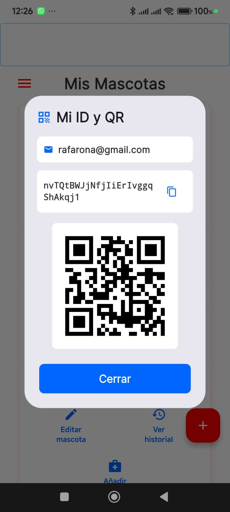
En el Menú Lateral, accede a tu código QR personal. Este es el código que debes mostrar en una nueva clínica para que puedan escanearlo y acceder al historial de tu mascota al instante.
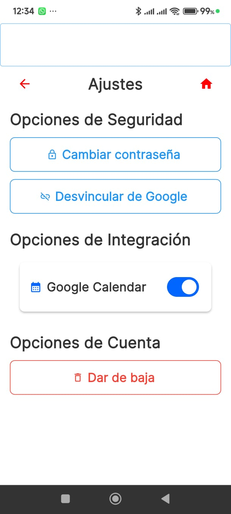
En Menú Lateral → Ajustes, puedes:
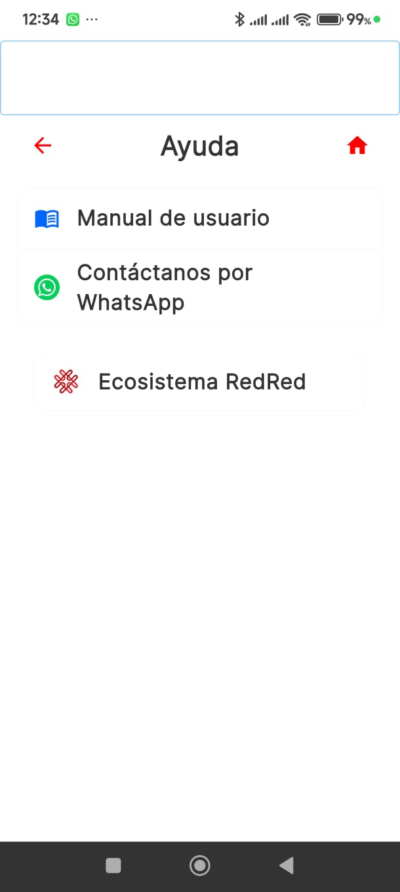
Si tienes dudas, ve a Menú Lateral → Ayuda para acceder a este manual, contactarnos por WhatsApp o conocer más sobre el ecosistema RedRed.